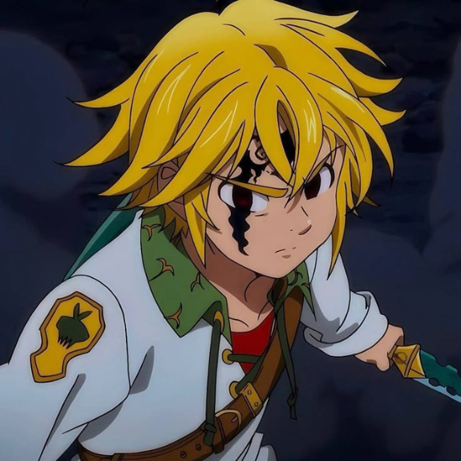
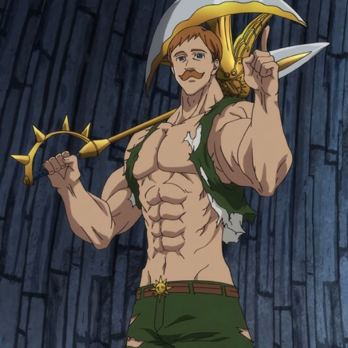
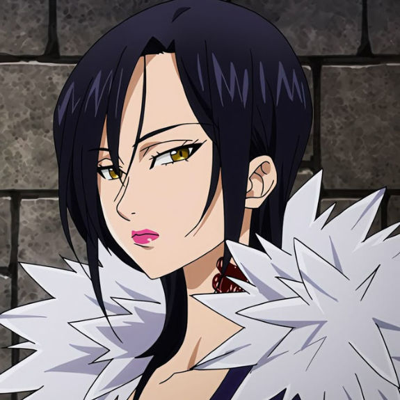

-
Meliodas, o Pecado da Ira do Dragão
Meliodas, filho do Rei Demônio e capitão dos Sete Pecados Capitais, carrega o título de Pecado da Ira do Dragão. Apesar de sua aparência despreocupada, ele esconde um poder avassalador, capaz de devastar tudo ao seu redor quando sua fúria desperta. Empunhando sua espada Lostvayne, ele domina a reação total, refletindo ataques mágicos com força multiplicada. Meliodas luta para proteger aqueles que ama, enquanto enfrenta seu próprio passado.
ATK/ 8800 DEF/ 5200 -
Escanor, o Pecado do Orgulho do Leão
O ser mais poderoso sob o sol, Escanor encarna o próprio orgulho. Seu poder, Sunshine, o transforma em uma força divina ao meio-dia, onde nenhum inimigo pode igualá-lo. De arrogância inabalável e força sobre-humana, ele encara batalhas com um sorriso, pois para ele, nada é impossível.
ATK/ 9000 DEF/ 5000 -
Ban, O Pecado da Ganância da Raposa
Imortal e implacável, Ban é um guerreiro ágil e imprevisível, cujo corpo já resistiu a incontáveis batalhas. Com sua habilidade Snatch, ele rouba não apenas objetos, mas a força de seus inimigos, tornando-se mais letal a cada golpe. Seu espírito indomável desafia até os deuses, e sua lealdade a Meliodas e Elaine é inabalável. Passou 1000 anos no purgátorio e voltou com habilidades incríveis, batendo de frente até com o rei demônio.
ATK/ 8000 DEF/ 4400 -
Diane, o Pecado da Inveja da Serpente
Uma gigante de coração puro, Diane domina a terra como poucos. Empunhando Gideon, seu martelo colossal, ela controla o próprio solo com a habilidade Criação, esmagando inimigos com a força da natureza. Apesar de sua imponência, carrega uma alma sensível e um amor sincero por King.
ATK/ 3600 DEF/ 6500 -
King, o Pecado da Preguiça do Urso
O Rei das Fadas Harlequin parece frágil, mas sua força é temida por todos. Com sua Lança Espiritual Chastiefol, que assume diversas formas, ele ataca com precisão letal. Seu dever de proteger a Floresta das Fadas pesa sobre seus ombros, mas seu verdadeiro poder desperta quando luta por aqueles que ama.
ATK/ 7700 DEF/ 4800 -
Gowther, o Pecado da Luxúria da Cabra
Uma entidade enigmática, Gowther manipula a mente e as emoções com sua magia Invasão, distorcendo a realidade de seus inimigos. Seu olhar vazio esconde um passado misterioso, e sua busca pela compreensão humana o torna tão fascinante quanto imprevisível.
ATK/ 7500 DEF/ 3200 -
Merlin, o Pecado da Gula do Javali
A feiticeira suprema, Merlin é um enigma de inteligência e poder. Mestre em magia, ela usa sua habilidade Infinity para prolongar feitiços indefinidamente, tornando-se praticamente invencível. Seu conhecimento ultrapassa eras, e sua presença inspira tanto respeito quanto temor.
ATK/ 7700 DEF/ 6500